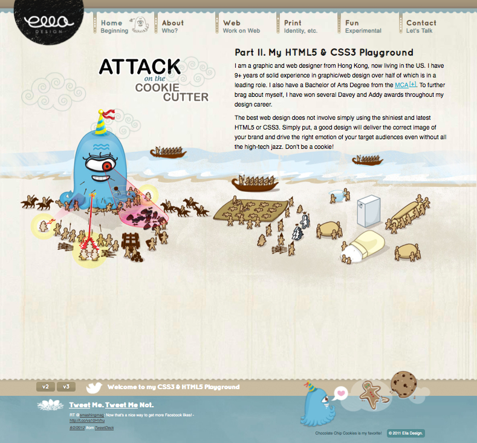
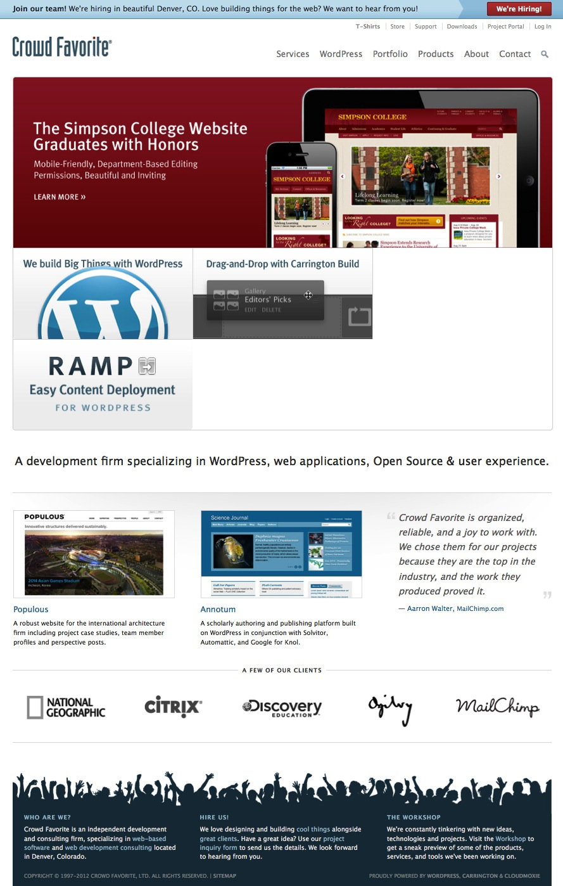
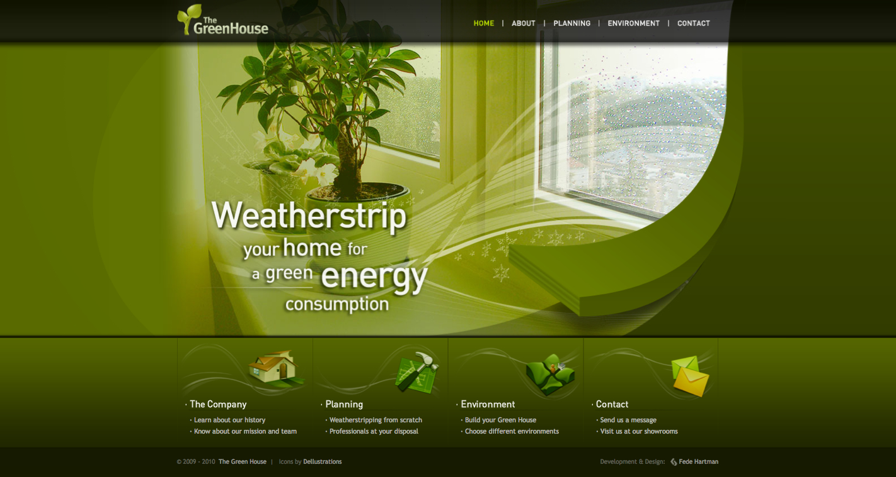
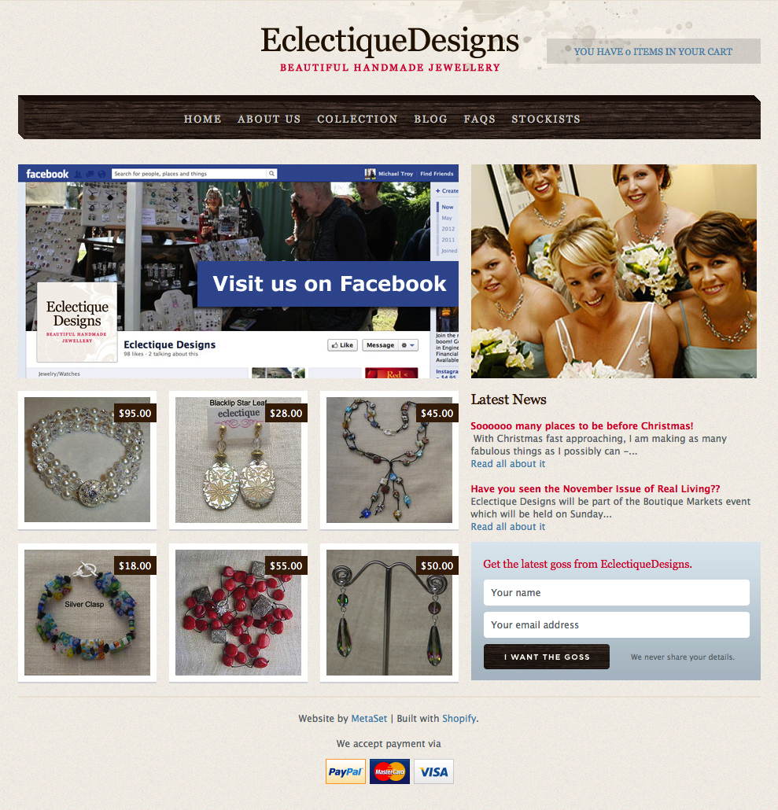

Ella Design
www.elladesign.com

Description: Ella Design is a portfolio website for Ella: an independent graphic and web designer who has apparently won several awards for her work. With a strong focus on character sketches as a design choice, it appears to be an appealing website.
HTML5 Analysis: After using the outline tool, the website appears to have good, semantic markup. It outlines efficiently according to the content and markup on the front page. However, after submitting their source code into the W3C validator, there are seval errors. Most of them are minimal: not following the stricter XHTML markup rules, resulting from no alt tags on the images and not using CSS properly in some areas.
Most of the errors could easily be fixed by placing alt tags in the image sources and placing their CSS in the CSS document, rather than having it in the HTML.
Crowd Favorite
www.crowdfavorite.com

Description: Crowd Favorite is a company that focuses on creating powerful websites with Wordpress. Their site looks like any other professional website and meets all aesthetic expectations.
HTML5 Analysis: As expected of any website deelopment company, they have done an amazing job at using clean, semantic markup. Their source code uses all the new HTML5 properties correctly.
The Green House
www.greenhouse.fedehartman.com

Description: The Green House is a company website that is currently promoting green energy. After reviewing the markup and key aspects of the site, it is assumed that this website is for portfolio purposes only. However, the markup is perfectly tabbed and commented and the appropriate HTML5 elements are used.
HTML5 Analysis: By far, this website seems to use HTML5 more efficiently and effectively than any other websites that have been reviewed during this project. It outlines perfectly, according to the markup they've used.
Eclectique Designs
www.eclectiquedesigns.com

Description: Eclectique Designs is a company website that makes and sells hand-made jewelry. After reviewing their markup, there isn't much HTML5 in their source code, with the exception of the doc-type. Almost everything in their website is done with div tags.
HTML5 Analysis: In their markup, there is little to no HTML5. Everything has been used with a div tag.
To make their website HTML5, you would have to replace the following div elements with new, semantic HTML5 markup:
- <div id="headmast"> with <header>
- <ul class="navigation"> with <nav>
- <div id="indexproducts"> with <section id="indexproducts">
- <div id="indexlatestnews"> with <aside id="indexlatestnews">
- <div id="newsSubscribe"> with <aside id="newsSubscribe">
- <div id="footer"> with <footer>
Some other areas could have additional sections, too, such as the "Latest News" links should be in their own section rather than spans.